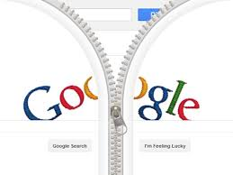

| NOMI | DATE | FONDATORI | COSA E' | IMMAGINE |
| Yahoo | 1994 | David Filo e Jerry Yang | Societa' fornitrice di servizi internet conosciuta principalmente per la sua funzione di motore di ricerca. | |
| Excite | 1994 | Un gruppo di studenti della Stanford University | E' un portale web gratuito, a pagamento per funzionalita'; aggiuntive. | |
| 1997 | Larry Page e Sergey Brin | E' il sito piu' visitato del mondo,commerciale e completamente gratuito. |  | |
| Overture.com | 1998 | Bill Gross | E' un sito internet famoso e gratuito. | |